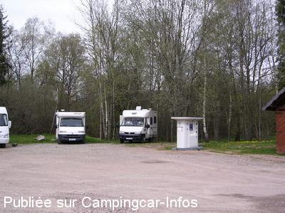

ASN = Aire de services avec stationnement nuit possible de :
MONTSAUCHE LES SETTONS
(N° 423)
Accès/adresse :
Lac des Settons D193
Parking de la Vieille Diligence
58230 MONTSAUCHE LES SETTONS
Parking de la Vieille Diligence
58230 MONTSAUCHE LES SETTONS
Latitude : (Nord) 47.19821° Décimaux ou 47° 11′ 53′′
Longitude : (Est) 4.06325° Décimaux ou 4° 3′ 47′′
Tarif : 2013
Stationnement gratuit
Services : 3 €
Jetons chez les commerçants et à la mairie
Type de borne : EURO-RELAIS
Services :


Tri sélectif Commerces à proximité pendant la saison touristique
Autres informations :
10 emplacements plats
Le 18/04/2014 par PapyJP
Le 23/03/2013 par Louisette
Le 23/03/2013 par Louisette
Le 30/07/2012 par Catherine
Le 03/04/2012 par Baffie

Le 26/02/2006 par JPS
de
Franck56
le 01/09/2015 :
Stationnement très commode au bord du lac. En revanche je n ai pu y vider mes eaux usées car pas de flexible et pas de grille au sol. La seule grille que j'ai vu était entourée de plot spécifiant qu'elle était là pour les eaux de pluie.
Par ailleurs, ce lac est très agréable. 2h pour un chouette tour en VTT, baignade dans une eau agréable, footing, jet-ski... je me suis régalé pendant les 36h passées sur place.
Stationnement très commode au bord du lac. En revanche je n ai pu y vider mes eaux usées car pas de flexible et pas de grille au sol. La seule grille que j'ai vu était entourée de plot spécifiant qu'elle était là pour les eaux de pluie.
Par ailleurs, ce lac est très agréable. 2h pour un chouette tour en VTT, baignade dans une eau agréable, footing, jet-ski... je me suis régalé pendant les 36h passées sur place.
de
Eve
le 11/07/2015 :
Aire correcte face au lac. Attention marché le jeudi sur
cet emplacement. A éviter le mercredi soir si vous ne
voulez pas vous retrouver entourés de camelots au matin.
Aire correcte face au lac. Attention marché le jeudi sur
cet emplacement. A éviter le mercredi soir si vous ne
voulez pas vous retrouver entourés de camelots au matin.
de
JOLY Jean-Pierre
le 15/04/2014 :
Aire très calme, malheureusement pas possibilité de ravitaillement en eau, borne encore en "Hors gel", juste électricité de dispo.... Nous y avons séjourné pendant notre ballade "decouverte du Morvan", du 05 au 12/04....Resto sympa, surtout la "TABLE D'HOTES" La Vieille Diligence....avec réservation...Cuisine familiale et conviviale.....Avons dicuté avec le propriétaire, et il a pour projet de faire des menus pour nous camping-caristes..... DONC TRES BON POINT!!!!!
Aire très calme, malheureusement pas possibilité de ravitaillement en eau, borne encore en "Hors gel", juste électricité de dispo.... Nous y avons séjourné pendant notre ballade "decouverte du Morvan", du 05 au 12/04....Resto sympa, surtout la "TABLE D'HOTES" La Vieille Diligence....avec réservation...Cuisine familiale et conviviale.....Avons dicuté avec le propriétaire, et il a pour projet de faire des menus pour nous camping-caristes..... DONC TRES BON POINT!!!!!
de
maree
le 12/09/2013 :
Passés début septembre pas trop de monde.Belle vue sur le lac.ATTENTION le marché ne se fait plus le lundi mais le JEUDI.Boulanger passe tout les jours
Passés début septembre pas trop de monde.Belle vue sur le lac.ATTENTION le marché ne se fait plus le lundi mais le JEUDI.Boulanger passe tout les jours
de
boisson
le 09/11/2012 :
site très agréable,belle vue,calme,belle balade à faire autour du lac.
Pas d'eau(fermée le 3 novembre).
Malgré la pluie soutenue,pas d'eau sur l'aire,donc il y a eu de l'amélioration.
Beaucoup de monde,mais très discret.
site très agréable,belle vue,calme,belle balade à faire autour du lac.
Pas d'eau(fermée le 3 novembre).
Malgré la pluie soutenue,pas d'eau sur l'aire,donc il y a eu de l'amélioration.
Beaucoup de monde,mais très discret.
de
Catherine
le 30/07/2012 :
Bonjour à tous.
Nous n'y avons pas dormi car nous étions au camping des Mésanges.
Nous sommes passés à pied.
L'aire n'a pas l'air mal du tout. Peut-être vite pleine car bien placée au bord du lac. Toilettes impeccables.
Nous y viendrons sûrement un de ces jours.
Bonjour à tous.
Nous n'y avons pas dormi car nous étions au camping des Mésanges.
Nous sommes passés à pied.
L'aire n'a pas l'air mal du tout. Peut-être vite pleine car bien placée au bord du lac. Toilettes impeccables.
Nous y viendrons sûrement un de ces jours.
de
cyrille02
le 11/04/2012 :
Aire agréable, la borne était en fonctionnement le we de Paques, par contre, les sanitaires étaient fermés.Les jetons sont en vente au magasin de souvenirs ou au restaurant "les terrasses" situés à 200m au dessus de l'aire.De plus, le magasin de souvenirs vend également du pain et dispose d'une petite épicerie ouvert le dimanche ainsi que le lundi de Paques.Le tour du lac est aménagé, un sentier fléché en jaune fait le tour complet (14,2kms) très agréable à faire à pied et très facile en VTT, les endroits boueux disposent d'une petite passerelle en bois (parcours à conseiller aux coureurs à pied)
Aire agréable, la borne était en fonctionnement le we de Paques, par contre, les sanitaires étaient fermés.Les jetons sont en vente au magasin de souvenirs ou au restaurant "les terrasses" situés à 200m au dessus de l'aire.De plus, le magasin de souvenirs vend également du pain et dispose d'une petite épicerie ouvert le dimanche ainsi que le lundi de Paques.Le tour du lac est aménagé, un sentier fléché en jaune fait le tour complet (14,2kms) très agréable à faire à pied et très facile en VTT, les endroits boueux disposent d'une petite passerelle en bois (parcours à conseiller aux coureurs à pied)
de
Guillaume
le 05/03/2012 :
site superbe pour faire des balades.
Aire en bordure de route, mais calme.
Les emplacements gagneraient à être matérialisés au sol pour permettre le stationnement réel de 10 C-C.
site superbe pour faire des balades.
Aire en bordure de route, mais calme.
Les emplacements gagneraient à être matérialisés au sol pour permettre le stationnement réel de 10 C-C.
de
gédo59
le 20/06/2011 :
Aire très agréable, nuit calme ,même en bordure de route. seul bémol, l'aire est très vite pleine,il vaut mieux arriver le matin, ou juste en début d'après midi
Aire très agréable, nuit calme ,même en bordure de route. seul bémol, l'aire est très vite pleine,il vaut mieux arriver le matin, ou juste en début d'après midi
de
olive mimi
le 27/08/2010 :
Nous avons passé quelques jours au lac des Settons, aire très bien, service 3€, calme mais dommage que pendant le mois d'aout, il faille changer de place le lundi pour le marché. Je confirme, le boulanger passe tous les matins, très agréable et superbes balades à pied et à velo autour du lac. §
Nous avons passé quelques jours au lac des Settons, aire très bien, service 3€, calme mais dommage que pendant le mois d'aout, il faille changer de place le lundi pour le marché. Je confirme, le boulanger passe tous les matins, très agréable et superbes balades à pied et à velo autour du lac. §
de
Bosco
le 08/10/2008 :
Aire pleine, 10 CC, nuit calme, le lac est vidé tous les 10 ans et nous tombons en plein dans cette periode, pas de chance.
Aire pleine, 10 CC, nuit calme, le lac est vidé tous les 10 ans et nous tombons en plein dans cette periode, pas de chance.
de
bebe
le 19/08/2007 :
Aire agreable, proche du lac, avec visite en bateau et pédalo, mais partis à 7 h le jeudi matin, car c'est le jour du marché et impossible de s'y garer jusqu'à 17 h le jeudi.
Aire agreable, proche du lac, avec visite en bateau et pédalo, mais partis à 7 h le jeudi matin, car c'est le jour du marché et impossible de s'y garer jusqu'à 17 h le jeudi.
de
jayet
le 16/08/2006 :
Dommage, quand il pleut on a les pieds dans l'eau et impossible de stationner le week-end trop de CC. Sinon, le site est très beau.
Dommage, quand il pleut on a les pieds dans l'eau et impossible de stationner le week-end trop de CC. Sinon, le site est très beau.